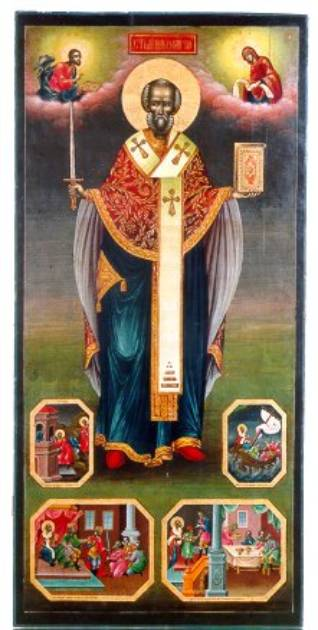

A Variety of Legends
Part 3
St Nicholas and the Thieves
The story told in this play is one well known as a
subject for dramatic rendering in Latin, one of three handled by Hilarius, the
story of the icon of St. Nicholas and the robbers. But in this vernacular play,
St. Nicholas himself is overshadowed by the new elements that have been joined
to the story. The Jew, or pagan, of earlier versions of the story, here appears
as a Muslim king at war with the Christians. The thieves are tavern revelers who
steal in order to pay for their drinks.
In a condensed summary, the story runs as follows:
After a prologue in which the content of the story
is related, the messenger Auberon appears and announces to the king that the
Christians have invaded his land. The king is enraged at his idol Tervagant
that this has been possible in spite of the fact that the image has recently
been richly gilded. Auberon is sent forth to summon the emirs with their
armies.
There follows a scene between the Christians and Muslims,
which is imbued with all the ardor and spirit of the crusading times. The
Christians show divinely inspired bravery and are visited by an angel that
encourages them in the fight. They are defeated in battle, but the angel
announces that they’ve won a place in Paradise.
The Muslims find on the battlefield only one
Christian alive, and he’s kneeling before an icon of St. Nicholas. The man with
his icon is brought before the Muslim king, who in ridicule asks what the ugly
old geezer is good for. The Christian announces that the icon is excellent as a
protector of treasure.
The king determines to test the icon and causes his
herald Connart to proclaim that the treasure will be left open, guarded only by
the icon of St. Nicholas. The Christian prisoner is given over to the hangman
Durand to die if his patron Saint doesn’t live up to his reputation.
The scene shifts to a tavern. The innkeeper has his
manservant announce that he has a fine wine for the epicure, a wine that he
describes in most eloquent fashion. The rogues assemble, and in a drawn-out
scene manifest their appreciation of the good wine, but at the end are unable
to pay their bill. They determine to steal the unguarded royal treasure, and
the innkeeper agrees to receive the stolen goods. They enter the treasure
chamber and, with great labor that affords much comedy, get away with the heavy
chest.
The theft is discovered and, although the Christian
prisoner is ordered to be hanged, he gets a suspended sentence of one day.
Cheered by an angel, he awaits the intervention of the Saint.
The thieves, in the meantime, have brought the
treasure to the tavern and continue their revelry until they are all asleep.
Hardly has sleep overtaken them, when the Saint appears and in gruff language
demands the return of the treasure, with the gallows as the alternative. The
thieves, panic-stricken, carry the treasure back. One of them proposes that
each take a handful of gold pieces, but they are too much terrified, and in the
end the ringleader must leave his mantle with the innkeeper in settlement.
The king, delighted at the protection afforded,
takes the Christian into high favor, naturally to the disappointment of the
hangman. He also decides to abjure his old faith, and his emirs feel it their
feudal duty to follow his example, with the exception of one, who, however, is
compelled to kneel before the Saint’s icon. In the midst of all this the image
of Tervagant utters a frightful shriek, but is, by command of the king, cast
out of the “Synagogue” in shame and disgrace while the Christian starts a Te Deum, in which the actors, and,
perhaps, the spectators, join.
In this play it will be observed that the old story
is made to serve a new purpose. St. Nicholas is made an exponent of the virtue
of Christianity as opposed to the Muslim faith.
It is particularly in the conflict between
Christianity and Islam that St. Nicholas is prominent as defender of the
faith. The time when St. Nicholas worship was introduced in the West
was a time when this conflict was at its height, the time of the Crusades. Jean
Bodel in his play, written about the year 1200, made new use of the story of
the icon of St. Nicholas set as the guardian of treasure. The setting for the
story provided by Bodel was in the wars of Christian against Muslim, and that
the central figure of the story in the play is the way in which the Christian
icon of St. Nicholas proved his power to be greater than that of the Muslim
idol of Tervagant, and thus led the Muslim king with his seneschal and all his
emirs to adopt the Christian faith.
On the other hand, balancing with these scenes, noble in tone, were the low comedy scenes provided by the tavern revelers, drinking, casting dice, quarreling, and speaking a slang often unintelligible to the modern reader, in general affording remarkable genre pictures of French life in the early thirteenth century.
In his two-sided development of the dramatic values
in this story, the author established a method which one might have expected to
be followed by his contemporaries, a method actually followed, a little later,
in the development of English drama. In reality, however, the play occupies a
solitary position in its own day and age. To the author must be given the
credit of original creation, of being ahead of his time. But this credit the
author must share with the story of his play, for has not the name of St.
Nicholas through all the centuries, down to our own time, been constantly
associated, not only with the idea of noble beneficence, but with a peculiar
quality of good nature and fun?
Thought to Ponder: We see St. Nicholas here as
a defender of the faith. While the power of earthly leaders comes from this world, his power comes from the next – freely flowing from the Father.
Despite the obvious power of God in his life, St. Nicholas would never boast
about what a wonderful person he is. His only concern is that the stories and
the celebrations lift up, not him,
but his Lord and Savior Jesus Christ – the One Who gave him the power to
perform the miracles, love the poor and hurting, and forgive the sinner.
Thought to Discuss around the Dinner Table: Two lessons can be learned
from this legend. First, how do we defend the faith without falling into the
sins of the Crusaders? Are our words dripping with condemnation for those who
disagree with us, or are they wrapped in mercy?
And second, when non-believers look at us and ask why they should even consider Jesus Christ, where in our lives would they find their answer? Do we love the poor and hurting? Do we forgive the sinner? Do we beat them over the head with a Bible, or do we reach out and show them God’s love?
A Variety of Legends - Part 3
